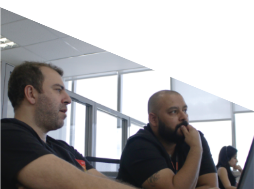

Relatório
Anual
2024s*
Promon S.A.
Fundada em 1960, a Promon S.A. é uma holding empresarial com um portfólio de companhias atuantes nos mercados de engenharia, de Tecnologia da Informação e Comunicação (TIC) e de eficiência e transformação digital. Com um perfil único, tem como seus acionistas os profissionais e ex-profissionais da Organização.

A holding Promon S.A. é formada por:
DESTAQUES DE 2024S*
*Nota: 2024s se refere ao ano social iniciado em 1º de abril de 2023, com término em 31 de março de 2024.
-
Promon S.A.
-

R$ 3,9 milhões
de lucro no resultado consolidado -

R$ 1,37 bilhão
de receita gerencial -

3.398
profissionais

-
-
Promon Engenharia
-

R$ 281 milhões
milhões em vendas -
R$ 271 milhões
em receita bruta -

418
profissionais -

Elevação dos índices
de satisfação dos clientes: 76% de NPI (+ 20 pontos percentuais em relação a 2023s) e 85% do Índice de Satisfação Geral (+ 3 pontos percentuais)

-
-
PLogicalis
Latin America*-
R$ 2,8 bilhões
em vendas -
R$ 3,3 bilhões
em receita bruta -
2.980
profissionais -
*O ano fiscal da Logicalis considera o período entre 1º de março de 2023 e 29 de fevereiro de 2024.
 -
Fundação Promon de Previdência Social (FPPS)*
Planos previdenciários
Plano MultiFlex
Modalidade contribuição definida
Promon BásicoPlus
Modalidade benefício definido
Resultados 2023
R$ 1,9 bilhão
de investimentos totais dois dos planos
R$ 124,5 milhões
em benefícios pagos aos 759 participantes assistidos
R$ 22,4 milhões
recebidos em contribuições
previdenciais dos 1.449 participantes ativos e autopatrocinados
ESG na Promon
Confira, abaixo, as principais iniciativas das empresas da Promon S.A. nos aspectos ambientais, sociais
e de governança durante 2024s.
- Criação da área de Desenvolvimento Sustentável para acelerar a integração da estratégia ESG nos processos e negócios.
- Implementação das ESG Meetings, reuniões de análise do potencial ESG de cada novo projeto que chega à Companhia.
- Criação de três grupos de afinidade com alto nível de participação e engajamento dos funcionários: Equidade racial e de gênero; LGBTQIA+; e Parentalidade.
- Realização do primeiro mapeamento de emissões de gases de efeito estufa da Companhia.
- Primeira aquisição de Reduções Certificadas de Emissões (RCEs), equivalentes a 348 toneladas de CO₂.
- Iniciativas voltadas à descarbonização, como monitoramento e neutralização das emissões de carbono e transporte por veículo elétrico.
- Logística reversa para descarte sustentável de lixo eletrônico.
- Lançamento do grupo de afinidade LogiBrave (PcDs + neurodiversos), acompanhando os outros grupos existentes: LogiPride (LGBTQIA+), LogiWomen (mulheres) e LogiBold (negros e pardos).
- Inserção do tema de diversidade e inclusão na pesquisa interna de satisfação da Empresa.
- Estabelecimento de parceria com a Iniciativa Empresarial pela Igualdade Racial.
ESG na Promon
Confira, abaixo, as principais iniciativas das empresas da Promon S.A. nos aspectos ambientais, sociais e de governança durante 2024.
- Criação da área de Desenvolvimento Sustentável para acelerar a integração da estratégia ESG nos processos e negócios.
- Implementação das ESG Meetings, reuniões de análise do potencial ESG de cada novo projeto que chega à Companhia.
- Criação de três grupos de afinidade com alto nível de participação e engajamento dos funcionários: Equidade racial e de gênero; LGBTQIA+; e Parentalidade.
- Realização do primeiro mapeamento de emissões de gases de efeito estufa da Companhia.
- Primeira aquisição de Reduções Certificadas de Emissões (RCEs), equivalentes a 348 toneladas de CO₂.
- Iniciativas voltadas à descarbonização, como monitoramento e neutralização das emissões de carbono e transporte por veículo elétrico.
- Logística reversa para descarte sustentável de lixo eletrônico.
- Lançamento do grupo de afinidade LogiBrave (PcDs + neurodiversos), acompanhando os outros grupos existentes: LogiPride (LGBTQIA+), LogiWomen (mulheres) e LogiBold (negros e pardos).
- Inserção do tema de diversidade e inclusão na pesquisa interna de satisfação da Empresa.
- Estabelecimento de parceria com a Iniciativa Empresarial pela Igualdade Racial.